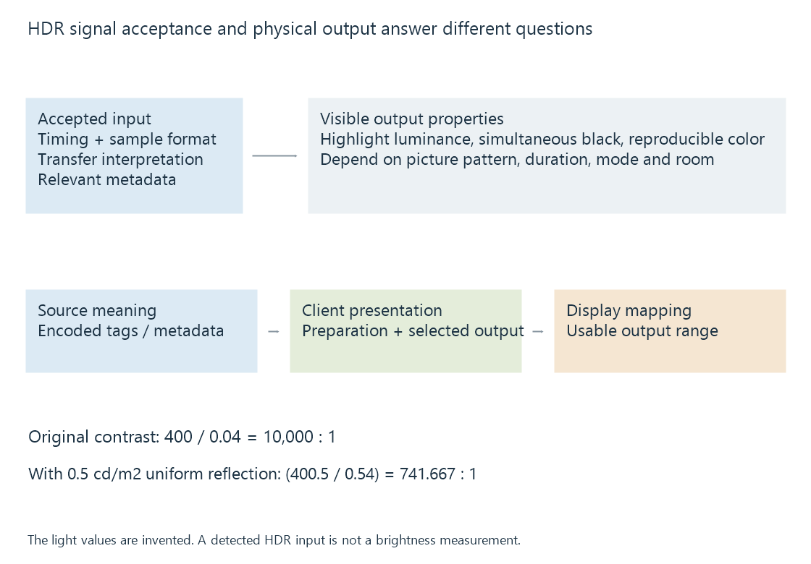

HDR display capabilities
HDR display capability combines accepted signal formats with the display’s usable luminance, contrast, color reproduction and processing behaviour.
An HDR movie asks the playback path to preserve and adapt a wider range of light and color than an ordinary SDR presentation. A display’s HDR capability consequently has more than one dimension.
The ability to accept a PQ signal is an input capability. The light, black level and colors produced from it are output properties. Both matter to an Emby viewer.
Signal support and visible performance
| Question | Evidence needed |
|---|---|
| Can this input accept the chosen HDR representation? | Format, transfer-function and metadata support on the actual connection |
| How bright can a highlight become? | Luminance under a stated area, duration and mode |
| How dark is a nearby dark area? | Black level under a relevant simultaneous picture pattern |
| Which colors are reproducible? | Color gamut, luminance and accuracy |
| How is content adapted? | The active mapping and processing behaviour |
A ten-bit input gives more code precision than an eight-bit input under the relevant encoding. It does not supply a particular peak luminance or a wide color gamut by itself.
A wide gamut also does not establish how bright every saturated color can become. Color volume develops the connection between color and luminance.

VESA’s DisplayHDR criteria assess several performance properties separately. Their published small-patch, full-screen and black-level tests help make the conditions explicit rather than reducing HDR performance to one label.
Contrast needs the same measurement context
An original simultaneous-picture model has white at 400 cd/m² and dark output at 0.04 cd/m²:
400 / 0.04 = 10,000:1
Now add an original uniform reflected ambient contribution of 0.5 cd/m²:
(400 + 0.5) / (0.04 + 0.5) = 741.667:1
This does not predict a product. It shows why the viewing environment changes apparent contrast, especially near black.
It also explains why a peak white measured in one pattern and a lowest black measured in another are not automatically the simultaneous contrast experienced during a movie. A local-dimming system can produce different black levels around a bright object than on an entirely dark screen.
Local dimming, OLED and projectors develop their light-producing mechanisms separately.
Three questions locate the active HDR route
What does the source mean? Its transfer function, primaries, range and metadata describe an intended interpretation. File metadata supplies information; it does not prove that the current output is using that interpretation.
What does the client send? The player and operating system select a presentation surface and output representation. They can pass HDR through an implemented route, adapt it for another HDR target or produce an SDR presentation.
What does the display do? It receives the selected signal and maps that signal into its current mode’s output range. A recognized HDR input can still use substantial internal tone mapping.
These stages explain several common situations. Server-side HDR-to-SDR conversion produces an SDR target before the client presents it. A compatible Direct Play route can deliver the original HDR source while the client still performs display preparation. An operating system can also combine SDR interface elements with HDR content in a managed presentation.
HDMI HDR signaling describes how input capability and current signal interpretation are communicated. Display color management describes the application/OS handoff.
Mapping determines which differences survive
Suppose a declared source contains highlights intended for 1000 cd/m², while an original display model has a usable 400-cd/m² highlight ceiling. Values above the ceiling cannot all appear as their original absolute luminance.
Clipping would make sufficiently bright values indistinguishable. A mapping can compress their differences into the available range, at the cost of changing their spacing and perhaps the brightness of neighbouring content.
The display may also vary its usable output with picture area and duration. A target suitable for a small highlight is not necessarily sustainable over a bright full-screen scene.
See Also
- Display peak brightness
- Local dimming and backlight zones
- Automatic brightness limiting
- HDMI HDR signaling
- HDR10